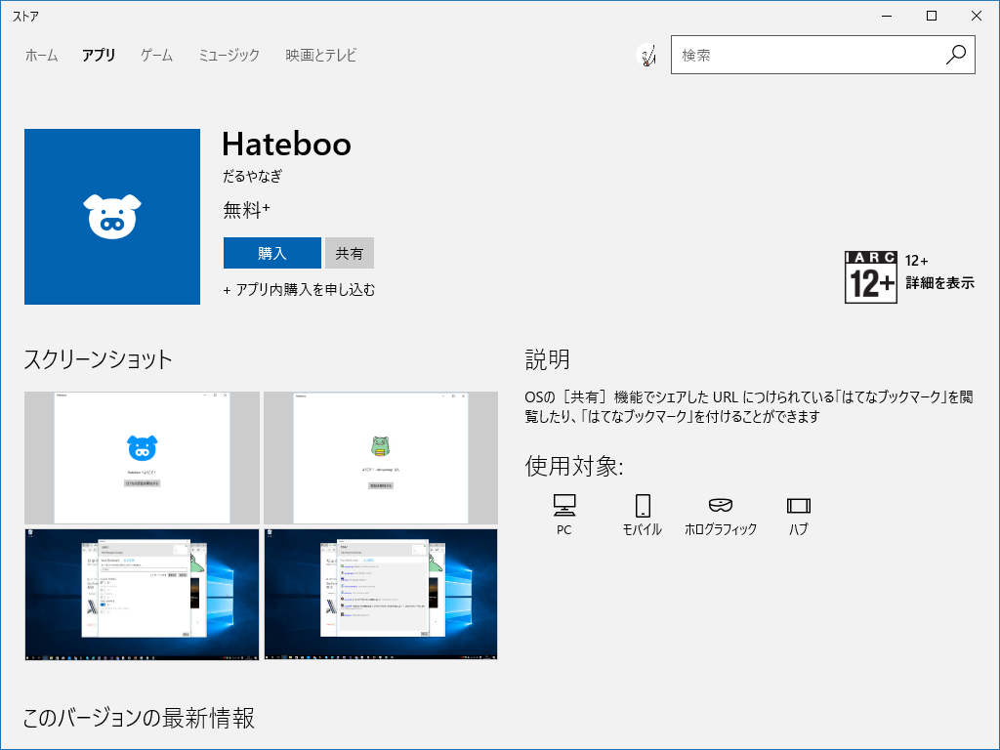

［共有］機能で「はてブ」を見るアプリ「Hateboo」を作ってみました。
執筆日時：

OSの［共有］機能でシェアした URL につけられている「はてなブックマーク」を閲覧したり、「はてなブックマーク」を付けることができるアプリを“ストア”でリリースしてみました。
よくログインに失敗したり、Windows 10 Mobile だと設定が見切れていて表示できない（プロ生ちゃんアプリでも同じミスやらかしたなー）など、自分で使っていてもポツポツ不具合が見つかるダメアプリですが、おいおいよくしていきたいと思います。とくにログインがよく失敗します……エラーが表示されたら、何とかリトライしてみてください（ごめんなさい！！）。デザインもダメダメだしなー（XAML 力が低い）、今度、その筋の人に相談させてもらおうと思う。
なんせ、“ストア”で名前をキープして一年近く放置していたもんで……完成度はともかく、初版を出しておきたかったのだ！
「+アプリ内購入が含まれています」と書かれていますが、別にないです。むかしサンプルとして“ストア”でアプリ内購入を作ったのをそのままにしちゃってた。あー、でも、どうせだから今度なにか追加してみようかな。